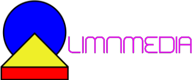

Before capturing, you must know your camera's true sensor size, and prepare a physical measuring method (ruler, tape measure, laser). Sensor specs must be confirmed from the manufacturer or reliable source.
Helpful Links:
Ensure the target is flat, perpendicular to camera, well-lit, and includes a known scale reference. Take high-resolution, uncropped images.
Status: Waiting for input...
Supported formats: JPEG
Align the center crosshair over a real-world known measurement. Pick two points that match a measurable baseline in the scene.
Enter the known physical baseline distance (millimeters) below to calculate pixel density and focal length scaling.
Status: Waiting for action...
Picked Point 1: --
Picked Point 2: --
Pixel Distance: --
(EXIF metadata will appear here after loading an image.)